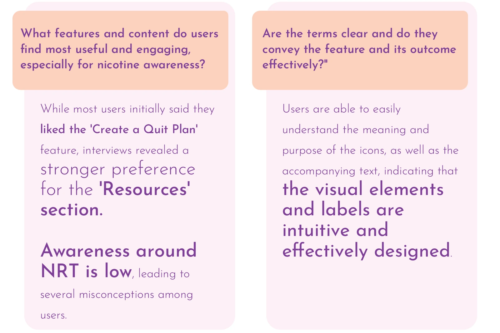
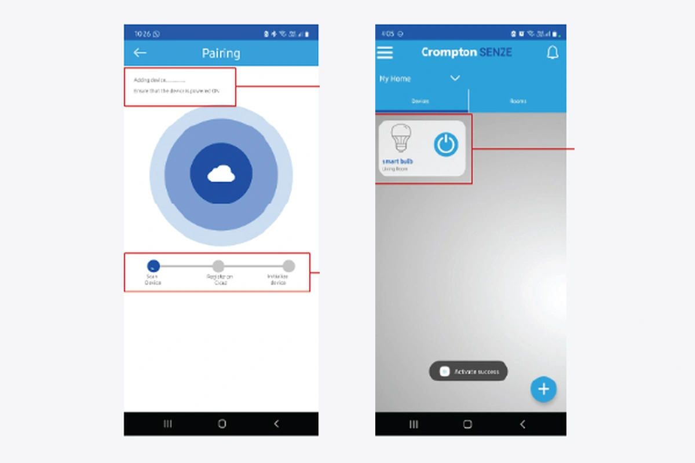

Explore study
Explore study A toolkit for conversations in Forres.
A puzzle and discussion guide, refined with stakeholders and handed over to FACT.
Glasgow School of Art · FACT · 2024UX researcher & interaction designer
I think through conversations, sketches, and making things. My research spans community life, clinical settings, and everyday technology.
 Explore study
Explore study A puzzle and discussion guide, refined with stakeholders and handed over to FACT.
Glasgow School of Art · FACT · 2024 Explore study
Explore study Procedure maps, prioritized user stories, and competitor research for the design team.
Monsoonfish · 2022–23
Explore studyTask analysis, interview synthesis, and recommendations for the app experience.
Monsoonfish · 2022
Explore studyTask-level evidence and usability recommendations for setup and device management.
Monsoonfish · 2022Right now, I’m making a carpet. I’ve also been exploring what crochet can do with light.


Tap a square. Hold to keep stitching.
Tap a square to add a round. Press and hold to keep stitching. Choose a different yarn for the next round.
Yarn for the next round
Choose a yarn and a square to begin.
Interactive stitch study, inspired by the carpet in progress.
I studied Design Innovation & Interaction Design at the Glasgow School of Art. My path has included co-design with communities, usability studies in people’s homes, and research in operating theatres.
Explore my background